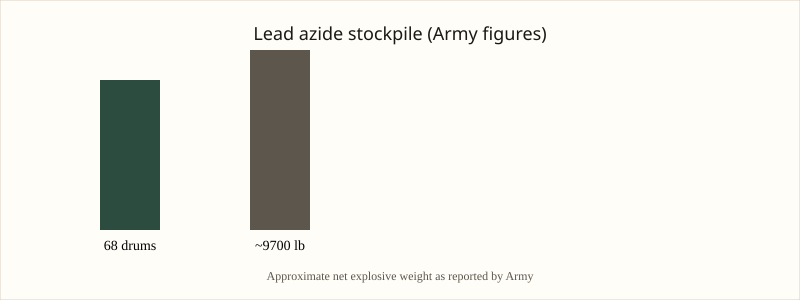

Iowa · explosives safety · 25 November 2026
The Army detonated approximately 9,700 pounds of degraded lead azide in place at the Iowa Army Ammunition Plant.

What is agreed across desks
The U.S. Army, in coordination with the EPA and other agencies, conducted a controlled in-place detonation of degraded lead azide stored in earth-covered magazines at the Iowa Army Ammunition Plant near Middletown on the morning of 25 November 2026. Official Army releases and contemporaneous wire reporting place the quantity at more than 9,700 pounds net explosive weight contained in approximately 68 drums. Inspectors had identified severe crystallization that rendered the material ultra-sensitive to friction, vibration, heat, or shock. Multi-agency technical review concluded that any attempt to move or chemically neutralize the material carried an unacceptable risk of uncontrolled detonation. The Eighth Circuit Court of Appeals had lifted an administrative stay on the EPA emergency permit the previous day, clearing the operation. Local and state emergency management prepared monitoring and public-safety measures in advance.
What is only a quote
Statements that the plume “could reach 100 miles” are model projections released by the Army, not post-event measurements. Claims that the material would have detonated spontaneously without intervention are technical assessments by the Army and ATF, not independent laboratory confirmations published outside the agency process. Political commentary that the operation was delayed solely for electoral reasons or that it was rushed remains outside the checkable timeline of the court order and the Army’s public schedule.
Mechanism a reader needs
Lead azide is a primary explosive used in detonators. When it crystallizes after prolonged storage in a water-ethanol suspension, its sensitivity increases sharply. Earth-covered magazines are designed to contain accidental explosions, but an uncontrolled event inside one still risks fragment throw and toxic residue. In-place detonation by explosive ordnance disposal specialists is a standard method for unstable stockpiles when transport is judged more dangerous. The plant has operated since the 1940s and holds conventional munitions components. Lead is a known neurotoxin; any residual deposition after the blast is the subject of planned environmental sampling by state and federal agencies. Those results will determine whether additional cleanup or health advisories are required. Until the sampling data are published, the geographic reach of measurable lead remains a model, not a fact.
The legal path was an EPA emergency permit. Environmental groups obtained a temporary stay; the Eighth Circuit dissolved it after reviewing the permit conditions and the Army’s risk analysis. The court’s order is public. The subsequent detonation occurred under that restored authority. No independent post-blast report has yet superseded the Army’s description of a successful controlled event.
What this story is not
It is not a finding that the plant has a history of similar uncontrolled events in recent years. It is not a measurement of actual lead levels in air or soil after 25 November. It is not a statement about the broader U.S. munitions inventory. The photograph above is a sign at the facility entrance; it is not a picture of the magazines or the blast.

Source articles and scores
| Outlet | Headline | T | N | C |
|---|---|---|---|---|
| Army.mil | Army announces controlled detonation of degraded explosive material at Iowa Army Ammunition Plant | 95 | +5 | 80 |
| USA Today | US Army to proceed with detonation of aging explosives in Iowa | 92 | 0 | 96 |
| Fox News | Army set to dispose of 68 barrels of lead azide at Iowa Army Ammunition Plant | 90 | +10 | 85 |
Images: Wikimedia Commons type photograph of the plant sign via Special:FilePath. onerror falls back to committed SVG. Chart is original. No CORS attribute.